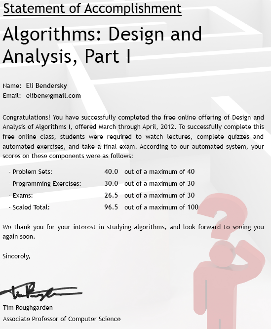

The recent influx of free courses offered by some of the leading technical universities of the USA online was too hard to resist and a couple of months ago I enrolled into the Design and Analysis of Algorithms I course, given by the Stanford prof Tim Roughgargen.
The course is now over and I want to write a short review. First the good things:
- The course website and the whole web app driving it is well executed, especially for something at such an early stage. Whatever small glitches appeared, were quickly fixed without becoming an annoyance.
- The teacher is pretty good - I actually enjoyed watching the lectures and weren't bored, which is unusual with me when it comes to lectures.
- I really liked the "optional" videos (watched them all). Not sure whether they would have been taught in the real course, but they add a lot.
As for the less-good things, my single real gripe is that the course homework and exam were way too easy. Just a few examples of what I mean:
- It took me, on average, 15-30 minutes per week for the "dry" (problem sets) part, and another 15-30 minutes per week for the "wet" (programming questions) part. This is way, way too little. I'm used to much more challenging homework from the Technion. Particularly, the wet exercises usually take days to complete. I must admit that one of the reasons of taking the course was an anticipation for some interesting algorithmic coding. It was interesting, but way too short, so I'm a bit disappointed here.
- The exam was extremely easy. It took me less than an hour to solve (out of 3 allotted hours), and the handful of points I lost are due to pure sloppiness (mis-reading one of the questions). The exam included questions from the lectures, for crying out loud! In the Technion's EE dept, we had a joke that every course teaches you 4 different materials: one in the lectures, another in the practice with the TAs, another in homework and yet another in the exam.
Yes, I know that the lecturer specifically mentioned that the level of the exercises and exam will be less challenging than in a real Stanford course, and I can see the reasons for that. However, I still wish that the course would try to cater for the stronger students as well, so that completing it with a high grade would give a real sense of accomplishment. To the course staff's credit it should be added that they did provide optional theoretical questions to ponder, which were much closer to what I'd expect from Algo homework to be. Nevertheless, as we all know, ungraded course work only goes so far with students. It's hard to find motivation to dig deep into it.
To conclude, I really enjoyed taking the course, and big thanks to Tim Roughgarden and the course staff for offering it and investing effort into making it enjoyable. I will be seriously considering enrolling in the follow-up Part II in late summer.
